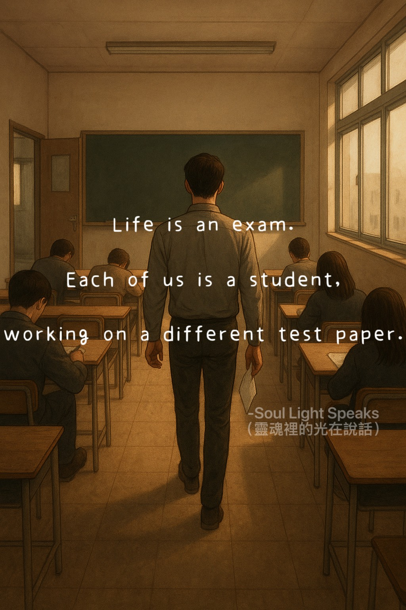
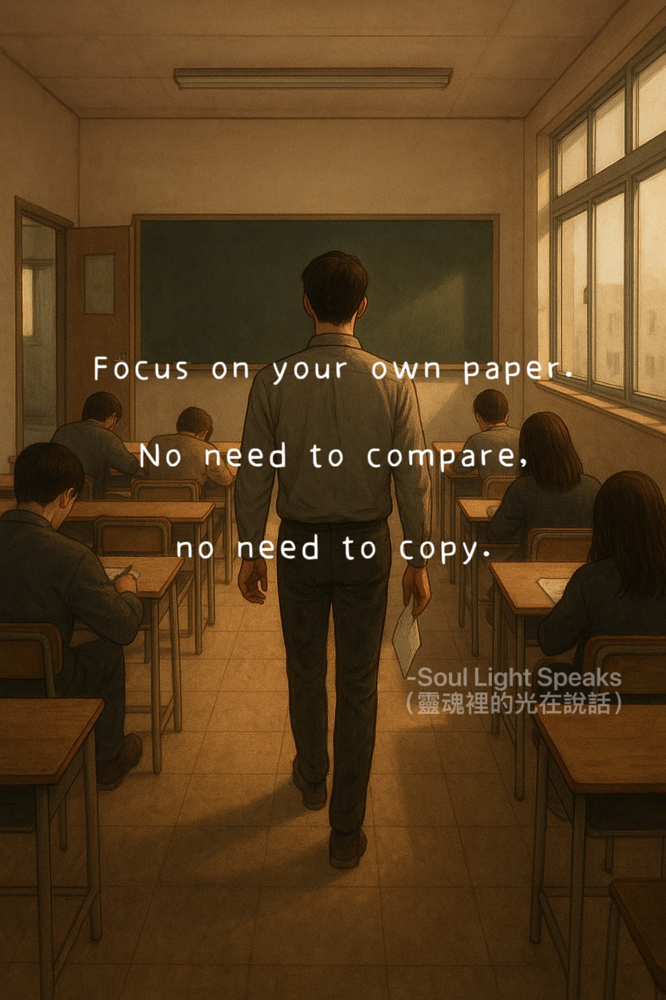
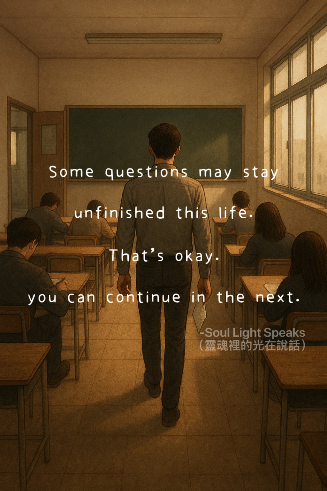

Each of us is a student,
working on a different test paper.
by the difficulty of the test.
It is about handing in your answers
with grace.

No need to compare,
no need to copy.

unfinished this life.
That is okay.
you can continue in the next.
We enter this world as if stepping into an exam hall.
Everyone is a student,
and every encounter, every relationship,
is a question on our test paper.
The relationship with a partner is like
studying together and keeping each other company.
If a breakup or divorce happens,
there is no need for resentment —
they have simply chosen another study partner or
decided to finish the test on their own.
As for seeking revenge for yourself or your family,
even if you have endured deep pain,
there is no need to let hatred take root in your heart.
Those feelings are simply life’s lessons,
reminding us to let go and find peace.
What we can do is treat ourselves kindly,
focus on completing our own test,
and write each answer with care —
even if tears fall, we can leave the desk with calm,
dignity, and our heads held high.
Some people choose an easier test this lifetime,
their life seems smooth;
others take a harder one,
facing particularly challenging questions.
This does not make anyone higher or lower.
A true good student is not defined
by the difficulty of the test,
but by whether they can hand in an honest
and wholehearted answer.
Do not compare, and do not envy.
Everyone has their own test.
What you envy in others might just be their lesson;
similarly, they might envy that you do not have that same test.
There is no need to rush over questions unfinished this lifetime.
You can continue in the next one.
As long as you do not give up,
there will be a lifetime where you complete a satisfying paper.
No panic, no competition.
We all chose tests of different difficulty,
yet in the end, we are all striving to be truly good students.